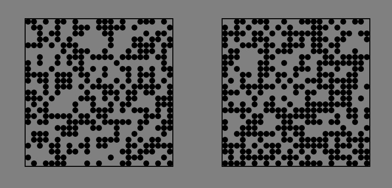

<!DOCTYPE html>
<html>

<head>
  <title>Count Dots</title>
  <!-- Removed JATOS script -->
  <script src="jspsych/jspsych.js"></script>
  <script src="p5/p5.min.js"></script>
  <script src="jspsych/plugin-fullscreen.js"></script>
  <script src="jspsych/plugin-count-dots.js"></script>
  <script src="jspsych/plugin-html-slider-response.js"></script>
  <script src="jspsych/plugin-html-slider-response-space.js"></script>
  <script src="jspsych/plugin-html-button-response.js"></script>
  <script src="jspsych/plugin-html-keyboard-response.js"></script>
  <script src="jspsych/plugin-instructions.js"></script>
  <script src="mersenne-twister.js"></script>
  <script src="crypto-js.min.js"></script>
  <link href="https://fonts.googleapis.com/css2?family=Corben&family=Quicksand&display=swap" rel="stylesheet">
  <link href="style.css" rel="stylesheet" type="text/css">
  </link>
</head>

<body></body>
<script>

  // Define the images to preload
  var images = ['images/example_trial.png'];

  const jsPsych = initJsPsych({
    preload_images: images,
    on_finish: function () {
        // Changed end experiment behavior
        var resultData = jsPsych.data.get().csv();
        
        // Save data to a downloadable file when experiment is complete
        var blob = new Blob([resultData], {type: 'text/csv'});
        var a = document.createElement('a');
        a.href = URL.createObjectURL(blob);
        a.download = 'experiment_data.csv';
        
        // Create a completion message with download button
        document.body.innerHTML = `
            <div style="text-align: center; padding: 50px; font-family: 'Quicksand', sans-serif;">
                <h1>Experiment Complete</h1>
                <p>Thank you for participating in our experiment.</p>
                <p>Click the button below to download your data.</p>
                <button id="download-btn" style="padding: 10px 20px; margin-top: 20px; cursor: pointer; background-color: #4CAF50; color: white; border: none; border-radius: 4px;">Download Data</button>
            </div>
        `;
        
        document.getElementById('download-btn').onclick = function() {
            a.click();
        };
    }
});


  function makeTimeline() {

    window.increment = 40;
    window.last_two_trials = [false, false]; //for online calibration
    window.calibration_factor = 2;


    timeline = [];

    timeline.push({
      type: jsPsychFullscreen,
      fullscreen_mode: true,
      message: `<p>The experiment will switch to full screen mode when you press the button below. Please do not exit the full screen mode until the end of the experiment.</p>`
    });

// Function to hide the mouse cursor
function hideMouse() {
  document.body.style.cursor = 'none'; // Hide the mouse cursor
}

// Function to show the mouse cursor
function showMouse() {
  document.body.style.cursor = 'auto'; // Show the mouse cursor
}

var fixation = {
  type: jsPsychHtmlKeyboardResponse,
  stimulus: '<div style="font-size:60px;">+</div>',
  choices: "NO_KEYS",
  trial_duration: 1000,
  on_start: function() {
    hideMouse(); // Hide mouse cursor during fixation
  },
  on_finish: function() {
    showMouse(); // Show mouse cursor after fixation
  }
};

    var dots = {
      type: jsCountDots,
      bigger_side: jsPsych.timelineVariable('bigger_side'),
      increment: () => { return (window.increment) },
      data: function() {
    return Object.assign(
      {}, 
      jsPsych.data.getLastTrialData().values()[0], // Gets the block-level data from fixation 
      { 
        trial_type: 'dots', // Save the trial type
        increment: window.increment // Save the current increment value (difficulty)
      }
    );
  },
      on_finish: function (data) {
        //staircasing procedure
        if (!data.correct) {
          //console.log('going up')
          window.increment += calibration_factor;
          window.last_two_trials = [false, false]
          // else, if the last two trials were correct, make the increment smaller
        } else if (last_two_trials[1]) {
          //console.log('going down')
          window.increment -= window.calibration_factor;
          window.increment = Math.max(0, window.increment)
          window.last_two_trials = [false, false]
          // else (last trial was correct, the one before was error), update last_two_trials
        } else {
          window.last_two_trials = [window.last_two_trials[1],
          data.correct]
        }
        //console.log(window.last_two_trials)
      }
    };

    var practice_stimuli = [
      {
        bigger_side: 'left',
        data: { test_part: 'percep_decision' }
      },
      {
        bigger_side: 'right',
        data: { test_part: 'percep_decision' }
      }
    ];

  var practice_feedback = {
  type: jsPsychHtmlKeyboardResponse,
  stimulus: function () {
    var last_box_trial = jsPsych.data.get().last(1).values()[0].correct;
    if (last_box_trial) {
      return "<div style=\"width:300px;height:56px;font-size:30px;text-align:center;\">Your box-selection was correct";
    } else {
      return "<div style=\"width:300px;height:56px;border:0px;font-size:30px;text-align:center\">Your box-selection was incorrect";
    }
  },
  trial_duration: function () {
    var last_box_trial = jsPsych.data.get().last(1).values()[0].correct;
    return last_box_trial ? 1500 : 3000;
  },
  response_ends_trial: false,
  on_start: function() {
    hideMouse(); // Hide mouse cursor during feedback
  },
  on_finish: function() {
    showMouse(); // Show mouse cursor after feedback
  }
};

/* consent form */
var consentForm = {
    type: jsPsychHtmlButtonResponse,
    stimulus: `<div style="text-align: left; padding: 10px;">
               <p style="margin-bottom: 10px;">Welcome to the experiment!</p>
               <p style="margin-bottom: 10px;">Ensure you have enough uninterrupted time to complete the survey. There are no risks, and you may end your participation at any time by exiting the webpage.</p>
               <p style="margin-bottom: 10px;">Participants will be paid only after completing both parts of the experiment. All data collected will be kept confidential and used solely for research. Anonymized results will be shared with the broad scientific community.</p>
               <p style="margin-bottom: 10px;">To participate, please provide your consent by approving the terms of this study.</p>
               </div>`,
    choices: ['Consent', 'Do Not Consent'],
    data: { task: 'consent' },
    on_finish: function(data) {
        if (data.response === 1) {
            // The participant selected "Do Not Consent"
            const message = 'You have chosen not to participate. Thank you for your time.';
            document.body.innerHTML = `<div style="text-align: center; font-size: 24px; padding: 20px;">${message}</div>`;
            
            // duration for how long the message is displayed 
            setTimeout(function() {
                jsPsych.endExperiment(message);
            }, 4000); // display message for 4 seconds
        }
    }
};
    var first_instructions = {
      type: jsPsychInstructions,
      pages: [
        '<p> Welcome to the experiment! This experiment is comprised of two parts: a perceptual decision-making task and a self report part. You will start with the perceptual task and then continue with the self report part.</p>',

        '<h2> Perceptual Task Instructions </h2>' +
        '<p> In this task, you will see two boxes on the screen for a brief period of time. Each box will contain a number of dots. Your task is to determine which box contains more dots.</p>',
          
        '<h2> Perceptual Task Instructions </h2>' +
        '<p> At the beginning of each trial, you will see a '+' sign in the center of the screen for one second. Focus your gaze on this sign. Then two black boxes containing black dots will briefly appear on the screen.</p>' +
        '',


        '<h2> Perceptual Task Instructions </h2>' +
        '<p> After the dots disappear, you will decide which box contained more dots. Use the 'S' (left) and 'F' (right) keys to make your decision. Your decision will be highlighted.</p>',

        '<h2> Confidence Rating </h2>' +
        '<p> After making your perceptual decision, a confidence rating scale will appear. You will rate your confidence in this decision on a scale from "Guessing" to "Certainly correct". Use your cursor to adjust your confidence level and click the mouse left key to submit your choice.</p>',

        '<h2> Practice Trials </h2>' +
        '<p> You will now complete 25 practice trials to become familiar with the task. Remember - use the 'S' (left) and 'F' (right) keys to make your decision. </p>',
      ],
      show_clickable_nav: true,
      key_forward: 'space'
    };


let incorrect_responses = false;

// 3. Define individual trials 
var confidence_correct_judgment = {
  type: jsPsychHtmlSliderResponse,
  stimulus: "<p>If you are certain you made the correct judgment, where on the scale would you place your confidence from 50% 'Guessing' to 100% 'Certainly correct'?</p>",
  labels: ['<span style="font-size: 20px;">Guessing</span>', '<span style="font-size: 20px;">Certainly correct</span>'],
  min: 1,
  max: 100,
  slider_width: 500,
  require_movement: true,
  data: { test_part: 'Confidence_Correct_Judgment' },
  on_finish: function (data) {
    data.confidence_rating = data.response;
    if (data.response <= 70) {
      incorrect_responses = true;
    }
  }
};

var confidence_mistake_judgment = {
  type: jsPsychHtmlSliderResponse,
  stimulus: "<p>If you are completely unsure whether you made a correct judgment, where on the scale would you place your confidence from 50% 'Guessing' to 100% 'Certainly correct'?</p>",
  labels: ['<span style="font-size: 20px;">Guessing</span>', '<span style="font-size: 20px;">Certainly correct</span>'],
  min: 1,
  max: 100,
  slider_width: 500,
  require_movement: true,
  data: { test_part: 'Confidence_Mistake_Judgment' },
  on_finish: function (data) {
    data.confidence_rating = data.response;
    if (data.response >= 30) {
      incorrect_responses = true;
    }
  }
};

    var final_instructions = {
      type: jsPsychInstructions,
      pages: [
        '<h2> Beginning the Full Task </h2>' +
        '<p> Great! You are ready to start the full task, which comprises 300 trials divided into four blocks. Please do your best—good luck.</p>' +
        '<p> Press "Next" to begin the task.</p>'
      ],
      show_clickable_nav: true
    };

//perceptual task trials: 
// Manage experiment trial length 
var trial_length = 75; // Number of trials in each block
var practice_trial_with_feedback_length = 6; // Number of trials in practice block with feedback
var practice_trial_without_feedback_length = 19; // Number of trials in practice block without feedback

// Create 6 trials of practice block with feedback and confidence ratings 
var practice_block_with_feedback = {
  timeline: [fixation, dots, practice_feedback],
  timeline_variables: practice_stimuli,
  sample: { 
    type: 'with-replacement', 
    size: practice_trial_with_feedback_length 
  },
  randomize_order: true,
  data: { block: 'practice_with_feedback' }  
};

var practice_block_without_feedback = {
  timeline: [fixation, dots],
  timeline_variables: practice_stimuli,
  sample: { 
    type: 'with-replacement', 
    size: practice_trial_without_feedback_length 
  },
  randomize_order: true,
  data: { block: 'practice_without_feedback' }  
};

var block_1 = {
  timeline: [fixation, dots],
  timeline_variables: practice_stimuli,
  sample: { 
    type: 'with-replacement', 
    size: trial_length 
  },
  randomize_order: true,
  data: { block: '1' }  
};

var block_2 = {
  timeline: [fixation, dots],
  timeline_variables: practice_stimuli,
  sample: { 
    type: 'with-replacement', 
    size: trial_length 
  },
  randomize_order: true,
  data: { block: '2' }  
};

var block_3 = {
  timeline: [fixation, dots],
  timeline_variables: practice_stimuli,
  sample: { 
    type: 'with-replacement', 
    size: trial_length 
  },
  randomize_order: true,
  data: { block: '3' }  
};

var block_4 = {
  timeline: [fixation, dots],
  timeline_variables: practice_stimuli,
  sample: { 
    type: 'with-replacement', 
    size: trial_length 
  },
  randomize_order: true,
  data: { block: '4' }  
};

    // Instruction after the first block
var first_block_instructions = {
    type: jsPsychHtmlKeyboardResponse,
    stimulus: "<h2>Good job!</h2><p>You have finished the first block of the task. You have <strong>3 more</strong> to go.</p><p>Press any key to continue.</p>"
};

// Instruction after the second block
var second_block_instructions = {
    type: jsPsychHtmlKeyboardResponse,
    stimulus: "<h2>Good job!</h2><p>You have finished the second block of the task. You have <strong>2 more</strong> to go.</p><p>Press any key to continue.</p>"
};

// Instruction after the third block
var third_block_instructions = {
    type: jsPsychHtmlKeyboardResponse,
    stimulus: "<h2>Good job!</h2><p>You have finished the third block of the task. You have <strong>1 more</strong> to go.</p><p>Press any key to continue.</p>"
};

// Instruction after the fourth block and before the comprehension items 
var fourth_block_instructions = {
    type: jsPsychHtmlKeyboardResponse,
    stimulus: "<h2>Good job!</h2><p>You have completed the main part of the experiment. Before we finish, please answer the following questions. </p><p>Press any key to continue.</p>"
};

var final_page = {
  type: jsPsychHtmlKeyboardResponse,
  stimulus: "<h2>Thank you for participating!</h2><p>The experiment is now complete.</p>"
};

    //set up the timeline of the expeirment 

    timeline.push(consentForm);
    timeline.push(first_instructions);
    timeline.push(practice_block_with_feedback);
    timeline.push(practice_block_without_feedback);
    timeline.push(final_instructions);
    timeline.push(block_1);
    timeline.push(first_block_instructions);
    timeline.push(block_2);
    timeline.push(second_block_instructions);
    timeline.push(block_3);
    timeline.push(third_block_instructions);
    timeline.push(block_4);
    timeline.push(fourth_block_instructions);
    timeline.push(confidence_correct_judgment);
    timeline.push(confidence_mistake_judgment);
    timeline.push(final_page);

    return timeline
  }

  function hexToBytes(hex) {
    for (var bytes = [], c = 0; c < hex.length; c += 2)
      bytes.push(parseInt(hex.substr(c, 2), 16));
    return bytes;
  }


/* start the experiment */    
// Removed JATOS onLoad and replaced with direct experiment initialization
window.onload = function() {
    var m = new MersenneTwister();
    Math.random = function() {return m.random()};
    
    // Generate a random protocol sum instead of getting it from JATOS
    var protocol_sum = CryptoJS.SHA256(Date.now().toString()).toString();
    
    // Generate a random subject identifier
    var subject_identifier = 'participant_' + Math.floor(Math.random() * 10000);
    
    subject_sum = hexToBytes(
        CryptoJS.SHA256(protocol_sum + subject_identifier).toString()
    );
    
    m.init_by_array(subject_sum, subject_sum.length);
    
    jsPsych.data.addProperties({
        'protocol_sum': protocol_sum,
        'subject_identifier': subject_identifier, 
        'subject_sum': subject_sum
    });
    
    timeline = makeTimeline();
    jsPsych.run(timeline);
};
</script>
</html>